2024
Janvier
2023
Décembre
-
31 —
Noël, encore, action comique et romance foireuse
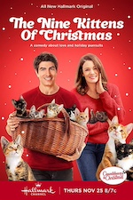
 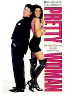Un château pour Noël, ♡ 9 chatons pour Noël, The family plan, Pretty Woman
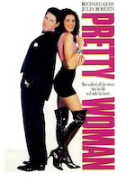Un château pour Noël, ♡ 9 chatons pour Noël, The family plan, Pretty Woman -
30 —
💖 Quatre films excellents
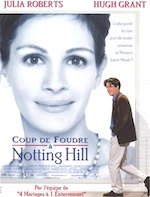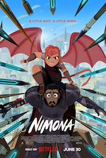♡ Coup de foudre à Notting Hill, ♡ Nimona, ♡ Vampire humaniste cherche suicidaire consendant, ♡ Le rêve de l’okapi
-
21 —
Autres films visionnés
L’ascension, ♡ A timeless Christmas, The family camp
-
17 —
Marathon ciné !
Oppenheimer, Un stupéfiant Noël, Class 1984, Noël au chalet, In love and deep water, How to fall in love by Christmas
-
09 —
Noël et hypnose
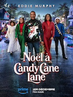Noël à Candy Cane Lane, ♡ Noël en Écosse, Hypnotic
- 09 — 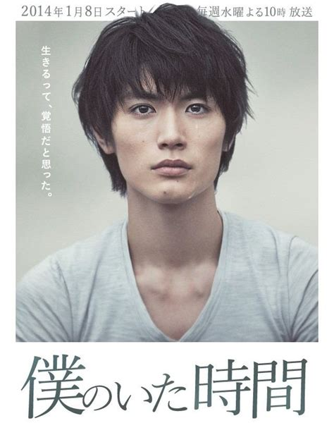 💖 Boku no Ita Jikan, série sortie 2014
-
07 —
Animation, Poney de Noël et thriller
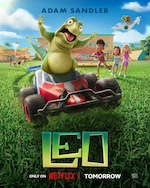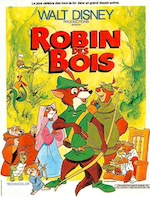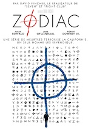♡ Trois frères Noël et un couffin, Léo, ♡ Robin des bois, Zodiac
Novembre
-
25 —
Autres films sympas
Le Noël surprise d’Emily, Please don’t destroy the treasure of Foggy Mountain
-
19 —
 Upload, série débutée en 2020
Upload, série débutée en 2020
-
19 —
💖 Panoplie de « Poney de Noël »
♡ Un Noël so British, ♡ The Royal Nanny, ♡ Il faut sauver la boutique de Noël, Noël à la ferme
- 19 — La nostalgie de l’Ange d’Alice Sebold
- 19 (édité) — 💖 Pour un garçon de Nick Hornby
- 18 — 🎶 Akai Ito, série sortie 2008
- 12 — Balade dans la vallée de Chaudefour
-
04 —
Nouvelles de Diatomée
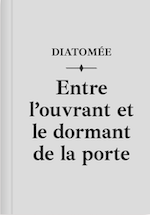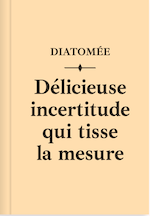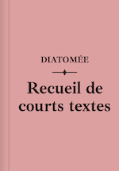Entre l’ouvrant et le dormant de la porte, Délicieuse incertitude qui tisse la mesure, Recueil de courts textes
- 04 — 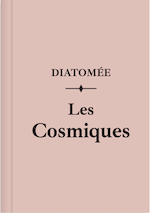 💖 Les Cosmiques de Diatomée
-
03 —
Films vus
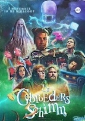Près des yeux, près du cœur, Gran Turismo, The Ghastly brothers
Octobre
-
31 —
Les derniers films vus
La très très grande classe, L’autre Zoey, Lectures diaboliques, Little Evil
- 15 — 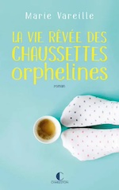 💖 La vie rêvée des chaussettes orphelines de Marie Vareille
- 14 — Recette de peinture à la terre d’ocre
-
14 —
Quelques films vus récemment


 Respire, Wahou !, Elvira maîtresse des ténèbres, Les Trolls 2
Respire, Wahou !, Elvira maîtresse des ténèbres, Les Trolls 2 -
06 —
 Le manoir hanté sorti en 2023
Le manoir hanté sorti en 2023
-
01 —
 💖 Suzume no Tojimari sorti en 2023
💖 Suzume no Tojimari sorti en 2023
Septembre
-
30 —
 The wonderful story of Henry Sugar sorti en 2023
The wonderful story of Henry Sugar sorti en 2023
-
24 —
 Prancer, un conte de Noël sorti en 2022
Prancer, un conte de Noël sorti en 2022
-
21 —
💖 Mes films préférés


 ♡ Orgueil et préjugés, ♡ Interstellar, ♡ Le Seigneur des Anneaux, ♡ Laggies, ♡ Tenet, ♡ Only lovers left alive, ♡ Harry Potter, ♡ Raiponce, ♡ Monster High, ♡ Twilight
♡ Orgueil et préjugés, ♡ Interstellar, ♡ Le Seigneur des Anneaux, ♡ Laggies, ♡ Tenet, ♡ Only lovers left alive, ♡ Harry Potter, ♡ Raiponce, ♡ Monster High, ♡ Twilight -
17 —
Des thrillers un peu trop hardcores

 Piège de soie (Julie Parsons), Le frère de sang (Éric Giacometti et Jacques Ravenne)
Piège de soie (Julie Parsons), Le frère de sang (Éric Giacometti et Jacques Ravenne) -
02 —
 Vacances à Saint-Rome de Tarn en août 2023
Vacances à Saint-Rome de Tarn en août 2023
-
02 —
Le premier jour et La première nuit de Marc Levy

 Le premier jour, La première nuit (Marc Levy)
Le premier jour, La première nuit (Marc Levy)